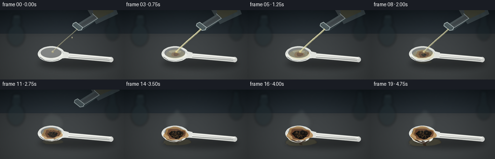
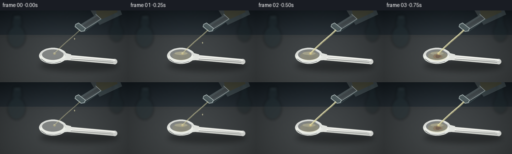

CODING AGENTS AS PIXEL WORLD MODELS
traex/GPT-5.6-Sol · material_0041
点击播放 · 原生 RGB 像素
逐轮保存的候选
回放视频、检查图与代码变化。
每份候选均可单独播放。实际图片检查记录在下方工具轨迹中。
候选 01播放与检查图
点击播放 · 原生 RGB 像素


展开代码变化
--- 上一保存版本
+++ 本次保存版本
@@ -0,0 +1,285 @@
+from pathlib import Path
+import math
+import numpy as np
+from PIL import Image, ImageDraw, ImageFilter
+import artifact_io
+
+# Procedural text-to-video renderer: concentrated sulfuric acid reacting with a plastic spoon.
+W, H, N = 256, 144, 20
+S = 4
+WW, HH = W*S, H*S
+rng = np.random.default_rng(4107)
+
+# Stable film/lab-surface texture prevents flat synthetic-looking regions.
+yy, xx = np.mgrid[0:HH, 0:WW]
+fixed_noise = rng.normal(0, 1, (HH, WW))
+fixed_noise = np.asarray(Image.fromarray(np.uint8(np.clip(128 + fixed_noise*28, 0, 255))).filter(
+ ImageFilter.GaussianBlur(1.1*S)), dtype=np.float32) - 128
+
+# Stable reaction seeds.
+bubble_seeds = [(float(rng.uniform(93,130)), float(rng.uniform(81,102)),
+ float(rng.uniform(0.65,1.8)), float(rng.uniform(0,6.28))) for _ in range(26)]
+smoke_seeds = [(float(rng.uniform(-8,8)), float(rng.uniform(0,6.28)), float(rng.uniform(.7,1.3))) for _ in range(9)]
+
+
+def P(points):
+ return [(int(x*S), int(y*S)) for x,y in points]
+
+def E(box):
+ return tuple(int(v*S) for v in box)
+
+def line(draw, pts, fill, width=1, joint='curve'):
+ draw.line(P(pts), fill=fill, width=max(1,int(width*S)), joint=joint)
+
+def ellipse(draw, box, fill=None, outline=None, width=1):
+ draw.ellipse(E(box), fill=fill, outline=outline, width=max(1,int(width*S)))
+
+def polygon(draw, pts, fill):
+ draw.polygon(P(pts), fill=fill)
+
+def smoothstep(x):
+ x = max(0.0, min(1.0, x))
+ return x*x*(3-2*x)
+
+def irregular(cx, cy, rx, ry, phase, n=30):
+ pts=[]
+ for k in range(n):
+ a=2*math.pi*k/n
+ wob=1 + .10*math.sin(3*a+phase) + .055*math.sin(7*a-phase*.7) + .025*math.sin(11*a+2.2)
+ pts.append((cx+rx*wob*math.cos(a), cy+ry*wob*math.sin(a)))
+ return pts
+
+def bezier(draw, pts, fill, width):
+ # Cubic Bezier sampled into a softly antialiased high-resolution stroke.
+ p0,p1,p2,p3=pts
+ out=[]
+ for j in range(41):
+ u=j/40; v=1-u
+ out.append((v**3*p0[0]+3*v*v*u*p1[0]+3*v*u*u*p2[0]+u**3*p3[0],
+ v**3*p0[1]+3*v*v*u*p1[1]+3*v*u*u*p2[1]+u**3*p3[1]))
+ line(draw,out,fill,width)
+
+def translucent_layer():
+ return Image.new('RGBA',(WW,HH),(0,0,0,0))
+
+def render(frame):
+ t=frame/(N-1)
+ # Background: cool dark backsplash above a brushed charcoal workbench.
+ arr=np.zeros((HH,WW,3),dtype=np.float32)
+ horizon=int(49*S)
+ top_y=np.arange(HH)[:,None]
+ # vignetted lab wall / bench gradients
+ wall=np.clip(top_y/(49*S),0,1)
+ arr[:,:,0]=18+14*wall
+ arr[:,:,1]=25+15*wall
+ arr[:,:,2]=30+16*wall
+ benchmask=(top_y>=horizon)
+ benchgrad=np.clip((top_y-horizon)/(95*S),0,1)
+ for c,(base,delta) in enumerate([(52,10),(56,10),(58,9)]):
+ arr[:,:,c]=np.where(benchmask,base+delta*benchgrad,arr[:,:,c])
+ vign=1-.16*((xx-WW/2)/(WW/2))**2-.10*((yy-HH/2)/(HH/2))**2
+ arr*=vign[:,:,None]
+ arr += fixed_noise[:,:,None]*.085
+ # A soft overhead pool of light.
+ light=np.exp(-(((xx-128*S)/(105*S))**2+((yy-73*S)/(75*S))**2))*10
+ arr+=light[:,:,None]
+ base=Image.fromarray(np.uint8(np.clip(arr,0,255)),'RGB').convert('RGBA')
+
+ # Background seam and blurred glassware silhouettes.
+ bg=translucent_layer(); d=ImageDraw.Draw(bg)
+ line(d,[(0,49),(256,49)],(145,154,156,35),.7)
+ line(d,[(0,51),(256,51)],(0,0,0,45),1.0)
+ ellipse(d,(15,30,51,75),(31,44,48,120)); polygon(d,[(22,30),(45,30),(42,9),(27,9)],(29,42,46,115))
+ line(d,[(28,13),(41,13)],(143,160,161,35),1)
+ ellipse(d,(218,26,247,63),(22,33,36,95)); polygon(d,[(224,30),(241,30),(238,3),(227,3)],(24,37,41,80))
+ bg=bg.filter(ImageFilter.GaussianBlur(2.5*S)); base=Image.alpha_composite(base,bg)
+
+ # Acid spill and cast shadow on the bench.
+ shadow=translucent_layer(); ds=ImageDraw.Draw(shadow)
+ ellipse(ds,(79,99,237,123),(0,0,0,86))
+ shadow=shadow.filter(ImageFilter.GaussianBlur(5.0*S)); base=Image.alpha_composite(base,shadow)
+
+ # Growing translucent spill under the bowl after overflow.
+ spillp=smoothstep((t-.27)/.66)
+ if spillp>0:
+ sp=translucent_layer(); sd=ImageDraw.Draw(sp)
+ pts=irregular(109,108,10+24*spillp,2.5+7*spillp,1.4,34)
+ polygon(sd,pts,(94,77,37,int(35+38*spillp)))
+ ellipse(sd,(94-14*spillp,105-3*spillp,123+19*spillp,110+7*spillp),(169,145,69,int(18+24*spillp)))
+ line(sd,[(89,108),(82-5*spillp,112+3*spillp)],(178,151,78,int(38*spillp)),1.0+spillp)
+ sp=sp.filter(ImageFilter.GaussianBlur(.8*S)); base=Image.alpha_composite(base,sp)
+
+ # Spoon, rendered as bright semi-gloss polypropylene.
+ spoon=translucent_layer(); sd=ImageDraw.Draw(spoon)
+ charp=smoothstep((t-.12)/.73)
+ deform=smoothstep((t-.55)/.45)
+ # Handle shadow and body, with rounded cap.
+ polygon(sd,[(126,88),(227,97),(234,101),(231,108),(127,99)],(205,207,202,255))
+ ellipse(sd,(224.2,97.1,234.5,108.0),(203,205,201,255))
+ polygon(sd,[(128,89),(228,98),(232,101),(130,96)],(244,245,239,255))
+ line(sd,[(137,92),(225,100)],(255,255,251,180),1.05)
+ line(sd,[(140,97),(226,104)],(132,137,136,95),.75)
+ # Neck connection.
+ polygon(sd,[(118,82),(142,88),(141,99),(119,101)],(224,226,221,255))
+ # Bowl silhouette, lower rim progressively softened and sagged.
+ bowlpts=[]
+ cx,cy=106,91
+ for k in range(48):
+ a=2*math.pi*k/48
+ # ellipse, with a subtle spoon-point near handle and heat sag on bottom
+ x=cx+27.8*math.cos(a)
+ y=cy+16.2*math.sin(a)
+ if math.sin(a)>.25 and abs(math.cos(a))<.75:
+ y += deform*(2.0+2.4*(1-abs(math.cos(a))))
+ bowlpts.append((x,y))
+ polygon(sd,bowlpts,(226,229,224,255))
+ # Concave inner basin.
+ inner=irregular(105,90,23.5,12.5,.2,48)
+ polygon(sd,inner,(236,238,231,255))
+ ellipse(sd,(84,78,127,99),(248,249,243,90))
+ line(sd,[(81,91),(83,84),(89,79),(102,76),(116,78),(127,85),(132,91)],(255,255,252,185),1.15)
+ line(sd,[(82,97),(92,104),(108,106),(122,102)],(123,129,128,100),.8)
+ # fine molded ridge in the handle
+ line(sd,[(143,94),(222,101)],(184,188,184,80),.45)
+ base=Image.alpha_composite(base,spoon)
+
+ # Acid sitting in the bowl; clear at first, amber as polymer degrades.
+ acidp=smoothstep((t-.025)/.30)
+ reaction=translucent_layer(); rd=ImageDraw.Draw(reaction)
+ if acidp>0:
+ ellipse(rd,(89-3*acidp,82,124+6*acidp,100+3*acidp),(199,177,83,int(34+24*acidp)))
+ ellipse(rd,(93,83,119,89),(255,242,171,int(40+35*(1-charp))))
+
+ # Heat stain halos: pale yellow -> orange-brown -> black carbonized center.
+ if charp>0:
+ polygon(rd,irregular(107,92,9+17*charp,4.5+10*charp,.8,36),
+ (164,109,42,int(85+85*charp)))
+ polygon(rd,irregular(108,92,5+15*charp,3+8.5*charp,2.0,32),
+ (96,53,27,int(120+100*charp)))
+ corep=smoothstep((t-.29)/.55)
+ if corep>0:
+ polygon(rd,irregular(109,93,3+12.5*corep,2+7*corep,3.3,30),
+ (18,16,14,int(175+75*corep)))
+ # crust fissures reveal caramel edges
+ for q in range(7):
+ a=.55+q*.69
+ r=(3+9*corep)
+ x0=109+1.5*math.cos(a); y0=93+math.sin(a)
+ x1=109+r*math.cos(a); y1=93+.58*r*math.sin(a)
+ line(rd,[(x0,y0),((x0+x1)/2+math.sin(a)*1.3,(y0+y1)/2),(x1,y1)],
+ (184,109,39,int(80+100*corep)),.38+.18*corep)
+ # curled, blackened lower lip late in reaction
+ if deform>0:
+ line(rd,[(91,104),(99,106+2*deform),(110,107+4*deform),(120,104+2*deform)],
+ (44,30,21,int(130+100*deform)),1.3+1.4*deform)
+ polygon(rd,[(104,105),(110,107),(114,112+5*deform),(108,111+5*deform)],
+ (46,31,21,int(190*deform)))
+ base=Image.alpha_composite(base,reaction)
+
+ # Surface fizz and gas bubbles: varying phases imply rapid timelapse activity.
+ if charp>.04:
+ bub=translucent_layer(); bd=ImageDraw.Draw(bub)
+ for j,(bx,by,br,ph) in enumerate(bubble_seeds):
+ gate=(j/len(bubble_seeds)) < min(1, charp*1.45)
+ if not gate: continue
+ pulse=.5+.5*math.sin(frame*1.7+ph)
+ rr=br*(.45+1.0*pulse)*(1-.22*deform)
+ # constrain most fizz to spoon basin
+ if ((bx-108)/25)**2+((by-92)/13)**2 > 1: continue
+ col=(236,196,105,int(75+110*pulse)) if charp<.5 else (173,125,65,int(80+100*pulse))
+ ellipse(bd,(bx-rr,by-rr, bx+rr,by+rr),(40,27,15,int(45+50*pulse)),col,.35)
+ ellipse(bd,(bx-rr*.45,by-rr*.65,bx,by-rr*.15),(255,231,169,int(60+75*pulse)))
+ base=Image.alpha_composite(base,bub)
+
+ # Bottle/neck tilted above the target. It lifts away after pouring.
+ # Coordinates preserve a clear causality between the lip and stream.
+ lift=max(0,frame-8)*2.0
+ shiftx=max(0,frame-8)*1.2
+ bottle_alpha=int(255*max(0,min(1,(14-frame)/4))) if frame>=10 else 255
+ if bottle_alpha>0:
+ gl=translucent_layer(); gd=ImageDraw.Draw(gl)
+ A=bottle_alpha
+ # large cropped glass shoulder/body at upper right
+ polygon(gd,[(172+shiftx,-15-lift),(235+shiftx,-15-lift),(244+shiftx,8-lift),(199+shiftx,29-lift)],
+ (154,175,174,int(.20*A)))
+ polygon(gd,[(177+shiftx,-8-lift),(230+shiftx,-10-lift),(234+shiftx,3-lift),(194+shiftx,22-lift)],
+ (217,226,215,int(.15*A)))
+ # acid visible inside vessel
+ polygon(gd,[(191+shiftx,-5-lift),(232+shiftx,-7-lift),(235+shiftx,3-lift),(196+shiftx,21-lift)],
+ (211,190,110,int(.18*A)))
+ # neck ending in pouring lip
+ polygon(gd,[(193+shiftx,8-lift),(204+shiftx,18-lift),(167+shiftx,40-lift),(156+shiftx,31-lift)],
+ (187,205,202,int(.27*A)))
+ polygon(gd,[(195+shiftx,11-lift),(200+shiftx,16-lift),(166+shiftx,36-lift),(162+shiftx,32-lift)],
+ (242,248,240,int(.16*A)))
+ line(gd,[(191+shiftx,7-lift),(202+shiftx,17-lift),(168+shiftx,39-lift)],(240,249,246,int(.56*A)),1.05)
+ line(gd,[(204+shiftx,17-lift),(169+shiftx,42-lift)],(80,105,105,int(.45*A)),1.25)
+ # thick oval/ring mouth seen at a diagonal
+ polygon(gd,[(151+shiftx,27-lift),(157+shiftx,24-lift),(172+shiftx,36-lift),(169+shiftx,42-lift),(162+shiftx,43-lift),(149+shiftx,33-lift)],
+ (156,180,178,int(.36*A)))
+ line(gd,[(151+shiftx,28-lift),(157+shiftx,25-lift),(171+shiftx,36-lift),(168+shiftx,41-lift),(162+shiftx,42-lift),(150+shiftx,32-lift),(151+shiftx,28-lift)],
+ (226,240,237,int(.72*A)),1.25)
+ line(gd,[(153+shiftx,31-lift),(163+shiftx,39-lift),(168+shiftx,38-lift)],(91,111,108,int(.52*A)),1.2)
+ line(gd,[(180+shiftx,-6-lift),(228+shiftx,-5-lift)],(255,255,248,int(.34*A)),1.2)
+ base=Image.alpha_composite(base,gl)
+
+ # Pour stream, beginning as drops, becoming continuous, then tapering off.
+ pour_strength=0
+ if frame==0: pour_strength=.12
+ elif frame==1: pour_strength=.35
+ elif 2<=frame<=7: pour_strength=1.0
+ elif frame==8: pour_strength=.72
+ elif frame==9: pour_strength=.40
+ elif frame==10: pour_strength=.16
+ if pour_strength>0:
+ st=translucent_layer(); td=ImageDraw.Draw(st)
+ start=(160+shiftx,39-lift)
+ end=(109.5,85.8)
+ # highly viscous clear liquid, gentle arc
+ width=.8+2.05*pour_strength
+ bezier(td,[start,(151,49-lift*.55),(129,65),(end[0],end[1])],(210,205,151,int(95+85*pour_strength)),width+1.1)
+ bezier(td,[(start[0]-1,start[1]),(149,50-lift*.55),(127,65),(108.8,86)],(255,250,208,int(125+105*pour_strength)),max(.55,width*.38))
+ # glint and small drops at the impact
+ ellipse(td,(106.4,83.8,111.5,88.9),(225,208,132,int(95+80*pour_strength)))
+ ellipse(td,(107.5,84.2,109.4,86.2),(255,255,229,int(130+80*pour_strength)))
+ if frame in (0,1,9,10):
+ dropy=55+(frame%3)*8
+ ellipse(td,(148,dropy,150.2,dropy+3.7),(237,230,180,175))
+ st=st.filter(ImageFilter.GaussianBlur(.16*S)); base=Image.alpha_composite(base,st)
+
+ # Vapor/smoke generated after strong dehydration/charring, drifting upward.
+ smokep=smoothstep((t-.22)/.58)*(1-.10*deform)
+ if smokep>0:
+ sm=translucent_layer(); md=ImageDraw.Draw(sm)
+ for j,(xo,ph,sc) in enumerate(smoke_seeds):
+ gate=(j+1)/len(smoke_seeds) < smokep*1.45
+ if not gate: continue
+ drift=math.sin(frame*.34+ph)*3.2
+ x0=108+xo*.5; y0=87-j*.25
+ h=15+23*smokep*sc+j*1.3
+ bezier(md,[(x0,y0),(x0-7+drift,y0-h*.32),(x0+9+drift,y0-h*.66),(x0+drift*1.4,y0-h)],
+ (199,205,199,int(18+22*smokep)),1.5+2.8*smokep*sc)
+ # diffuse reaction plume
+ ellipse(md,(86,58-12*smokep,132,91),(183,190,183,int(9+17*smokep)))
+ sm=sm.filter(ImageFilter.GaussianBlur((2.0+2.2*smokep)*S)); base=Image.alpha_composite(base,sm)
+
+ # Optical highlights at active impact and a restrained vignette.
+ if pour_strength>.3:
+ hi=translucent_layer(); hd=ImageDraw.Draw(hi)
+ ellipse(hd,(101,79,117,94),(248,224,145,int(16+22*pour_strength)))
+ hi=hi.filter(ImageFilter.GaussianBlur(4*S)); base=Image.alpha_composite(base,hi)
+
+ rgb=base.convert('RGB').resize((W,H),Image.Resampling.LANCZOS)
+ out=np.asarray(rgb).astype(np.float32)
+ # very subtle exposure pulse only, consistent with a timelapse camera.
+ out *= 1.0 + .006*math.sin(frame*.7)
+ return np.uint8(np.clip(out,0,255))
+
+
+def main():
+ frames=np.stack([render(i) for i in range(N)],axis=0)
+ artifact_io.save(frames,Path(__file__).resolve().parent)
+ print('saved',frames.shape,frames.dtype,'range',frames.min(),frames.max())
+
+if __name__=='__main__':
+ main()
可观测工具轨迹
实际执行的命令与返回图片。
命令 1exit 0
/bin/bash -lc "cat prompt.txt && printf '\\n---RULES---\\n' && cat GENERATION_RULES.md && printf '\\n---SPEC---\\n' && cat task_spec.json"
命令 2exit 1
/bin/bash -lc "find . -maxdepth 2 -type f -printf '%p %s bytes\\n' | sort && printf '\\nTools:\\n' && command -v ffmpeg && command -v python3 && python3 - <<'PY' mods=['PIL','numpy','cv2','cairo','moviepy'] for m in mods: try: x=__import__(m); print(m,'OK',getattr(x,'__version__','')) except Exception as e: print(m,'NO',e) PY"
命令 3exit 0
/bin/bash -lc 'cat artifact_io.py'
命令 4exit 0
/bin/bash -lc "command -v ffmpeg || true; command -v python3 || true; python3 - <<'PY' mods=['PIL','numpy','cv2','cairo','moviepy'] for m in mods: try: x=__import__(m); print(m,'OK',getattr(x,'__version__','')) except Exception as e: print(m,'NO',e) PY"
命令 5exit 0
/bin/bash -lc "cat > generate.py <<'PY'
from pathlib import Path
import math
import numpy as np
from PIL import Image, ImageDraw, ImageFilter
import artifact_io
# Procedural text-to-video renderer: concentrated sulfuric acid reacting with a plastic spoon.
W, H, N = 256, 144, 20
S = 4
WW, HH = W*S, H*S
rng = np.random.default_rng(4107)
# Stable film/lab-surface texture prevents flat synthetic-looking regions.
yy, xx = np.mgrid[0:HH, 0:WW]
fixed_noise = rng.normal(0, 1, (HH, WW))
fixed_noise = np.asarray(Image.fromarray(np.uint8(np.clip(128 + fixed_noise*28, 0, 255))).filter(
ImageFilter.GaussianBlur(1.1*S)), dtype=np.float32) - 128
# Stable reaction seeds.
bubble_seeds = [(float(rng.uniform(93,130)), float(rng.uniform(81,102)),
float(rng.uniform(0.65,1.8)), float(rng.uniform(0,6.28))) for _ in range(26)]
smoke_seeds = [(float(rng.uniform(-8,8)), float(rng.uniform(0,6.28)), float(rng.uniform(.7,1.3))) for _ in range(9)]
def P(points):
return [(int(x*S), int(y*S)) for x,y in points]
def E(box):
return tuple(int(v*S) for v in box)
def line(draw, pts, fill, width=1, joint='curve'):
draw.line(P(pts), fill=fill, width=max(1,int(width*S)), joint=joint)
def ellipse(draw, box, fill=None, outline=None, width=1):
draw.ellipse(E(box), fill=fill, outline=outline, width=max(1,int(width*S)))
def polygon(draw, pts, fill):
draw.polygon(P(pts), fill=fill)
def smoothstep(x):
x = max(0.0, min(1.0, x))
return x*x*(3-2*x)
def irregular(cx, cy, rx, ry, phase, n=30):
pts=[]
for k in range(n):
a=2*math.pi*k/n
wob=1 + .10*math.sin(3*a+phase) + .055*math.sin(7*a-phase*.7) + .025*math.sin(11*a+2.2)
pts.append((cx+rx*wob*math.cos(a), cy+ry*wob*math.sin(a)))
return pts
def bezier(draw, pts, fill, width):
# Cubic Bezier sampled into a softly antialiased high-resolution stroke.
p0,p1,p2,p3=pts
out=[]
for j in range(41):
u=j/40; v=1-u
out.append((v**3*p0[0]+3*v*v*u*p1[0]+3*v*u*u*p2[0]+u**3*p3[0],
v**3*p0[1]+3*v*v*u*p1[1]+3*v*u*u*p2[1]+u**3*p3[1]))
line(draw,out,fill,width)
def translucent_layer():
return Image.new('RGBA',(WW,HH),(0,0,0,0))
def render(frame):
t=frame/(N-1)
# Background: cool dark backsplash above a brushed charcoal workbench.
arr=np.zeros((HH,WW,3),dtype=np.float32)
horizon=int(49*S)
top_y=np.arange(HH)[:,None]
# vignetted lab wall / bench gradients
wall=np.clip(top_y/(49*S),0,1)
arr[:,:,0]=18+14*wall
arr[:,:,1]=25+15*wall
arr[:,:,2]=30+16*wall
benchmask=(top_y>=horizon)
benchgrad=np.clip((top_y-horizon)/(95*S),0,1)
for c,(base,delta) in enumerate([(52,10),(56,10),(58,9)]):
arr[:,:,c]=np.where(benchmask,base+delta*benchgrad,arr[:,:,c])
vign=1-.16*((xx-WW/2)/(WW/2))**2-.10*((yy-HH/2)/(HH/2))**2
arr*=vign[:,:,None]
arr += fixed_noise[:,:,None]*.085
# A soft overhead pool of light.
light=np.exp(-(((xx-128*S)/(105*S))**2+((yy-73*S)/(75*S))**2))*10
arr+=light[:,:,None]
base=Image.fromarray(np.uint8(np.clip(arr,0,255)),'RGB').convert('RGBA')
# Background seam and blurred glassware silhouettes.
bg=translucent_layer(); d=ImageDraw.Draw(bg)
line(d,[(0,49),(256,49)],(145,154,156,35),.7)
line(d,[(0,51),(256,51)],(0,0,0,45),1.0)
ellipse(d,(15,30,51,75),(31,44,48,120)); polygon(d,[(22,30),(45,30),(42,9),(27,9)],(29,42,46,115))
line(d,[(28,13),(41,13)],(143,160,161,35),1)
ellipse(d,(218,26,247,63),(22,33,36,95)); polygon(d,[(224,30),(241,30),(238,3),(227,3)],(24,37,41,80))
bg=bg.filter(ImageFilter.GaussianBlur(2.5*S)); base=Image.alpha_composite(base,bg)
# Acid spill and cast shadow on the bench.
shadow=translucent_layer(); ds=ImageDraw.Draw(shadow)
ellipse(ds,(79,99,237,123),(0,0,0,86))
shadow=shadow.filter(ImageFilter.GaussianBlur(5.0*S)); base=Image.alpha_composite(base,shadow)
# Growing translucent spill under the bowl after overflow.
spillp=smoothstep((t-.27)/.66)
if spillp>0:
sp=translucent_layer(); sd=ImageDraw.Draw(sp)
pts=irregular(109,108,10+24*spillp,2.5+7*spillp,1.4,34)
polygon(sd,pts,(94,77,37,int(35+38*spillp)))
ellipse(sd,(94-14*spillp,105-3*spillp,123+19*spillp,110+7*spillp),(169,145,69,int(18+24*spillp)))
line(sd,[(89,108),(82-5*spillp,112+3*spillp)],(178,151,78,int(38*spillp)),1.0+spillp)
sp=sp.filter(ImageFilter.GaussianBlur(.8*S)); base=Image.alpha_composite(base,sp)
# Spoon, rendered as bright semi-gloss polypropylene.
spoon=translucent_layer(); sd=ImageDraw.Draw(spoon)
charp=smoothstep((t-.12)/.73)
deform=smoothstep((t-.55)/.45)
# Handle shadow and body, with rounded cap.
polygon(sd,[(126,88),(227,97),(234,101),(231,108),(127,99)],(205,207,202,255))
ellipse(sd,(224.2,97.1,234.5,108.0),(203,205,201,255))
polygon(sd,[(128,89),(228,98),(232,101),(130,96)],(244,245,239,255))
line(sd,[(137,92),(225,100)],(255,255,251,180),1.05)
line(sd,[(140,97),(226,104)],(132,137,136,95),.75)
# Neck connection.
polygon(sd,[(118,82),(142,88),(141,99),(119,101)],(224,226,221,255))
# Bowl silhouette, lower rim progressively softened and sagged.
bowlpts=[]
cx,cy=106,91
for k in range(48):
a=2*math.pi*k/48
# ellipse, with a subtle spoon-point near handle and heat sag on bottom
x=cx+27.8*math.cos(a)
y=cy+16.2*math.sin(a)
if math.sin(a)>.25 and abs(math.cos(a))<.75:
y += deform*(2.0+2.4*(1-abs(math.cos(a))))
bowlpts.append((x,y))
polygon(sd,bowlpts,(226,229,224,255))
# Concave inner basin.
inner=irregular(105,90,23.5,12.5,.2,48)
polygon(sd,inner,(236,238,231,255))
ellipse(sd,(84,78,127,99),(248,249,243,90))
line(sd,[(81,91),(83,84),(89,79),(102,76),(116,78),(127,85),(132,91)],(255,255,252,185),1.15)
line(sd,[(82,97),(92,104),(108,106),(122,102)],(123,129,128,100),.8)
# fine molded ridge in the handle
line(sd,[(143,94),(222,101)],(184,188,184,80),.45)
base=Image.alpha_composite(base,spoon)
# Acid sitting in the bowl; clear at first, amber as polymer degrades.
acidp=smoothstep((t-.025)/.30)
reaction=translucent_layer(); rd=ImageDraw.Draw(reaction)
if acidp>0:
ellipse(rd,(89-3*acidp,82,124+6*acidp,100+3*acidp),(199,177,83,int(34+24*acidp)))
ellipse(rd,(93,83,119,89),(255,242,171,int(40+35*(1-charp))))
# Heat stain halos: pale yellow -> orange-brown -> black carbonized center.
if charp>0:
polygon(rd,irregular(107,92,9+17*charp,4.5+10*charp,.8,36),
(164,109,42,int(85+85*charp)))
polygon(rd,irregular(108,92,5+15*charp,3+8.5*charp,2.0,32),
(96,53,27,int(120+100*charp)))
corep=smoothstep((t-.29)/.55)
if corep>0:
polygon(rd,irregular(109,93,3+12.5*corep,2+7*corep,3.3,30),
(18,16,14,int(175+75*corep)))
# crust fissures reveal caramel edges
for q in range(7):
a=.55+q*.69
r=(3+9*corep)
x0=109+1.5*math.cos(a); y0=93+math.sin(a)
x1=109+r*math.cos(a); y1=93+.58*r*math.sin(a)
line(rd,[(x0,y0),((x0+x1)/2+math.sin(a)*1.3,(y0+y1)/2),(x1,y1)],
(184,109,39,int(80+100*corep)),.38+.18*corep)
# curled, blackened lower lip late in reaction
if deform>0:
line(rd,[(91,104),(99,106+2*deform),(110,107+4*deform),(120,104+2*deform)],
(44,30,21,int(130+100*deform)),1.3+1.4*deform)
polygon(rd,[(104,105),(110,107),(114,112+5*deform),(108,111+5*deform)],
(46,31,21,int(190*deform)))
base=Image.alpha_composite(base,reaction)
# Surface fizz and gas bubbles: varying phases imply rapid timelapse activity.
if charp>.04:
bub=translucent_layer(); bd=ImageDraw.Draw(bub)
for j,(bx,by,br,ph) in enumerate(bubble_seeds):
gate=(j/len(bubble_seeds)) < min(1, charp*1.45)
if not gate: continue
pulse=.5+.5*math.sin(frame*1.7+ph)
rr=br*(.45+1.0*pulse)*(1-.22*deform)
# constrain most fizz to spoon basin
if ((bx-108)/25)**2+((by-92)/13)**2 > 1: continue
col=(236,196,105,int(75+110*pulse)) if charp<.5 else (173,125,65,int(80+100*pulse))
ellipse(bd,(bx-rr,by-rr, bx+rr,by+rr),(40,27,15,int(45+50*pulse)),col,.35)
ellipse(bd,(bx-rr*.45,by-rr*.65,bx,by-rr*.15),(255,231,169,int(60+75*pulse)))
base=Image.alpha_composite(base,bub)
# Bottle/neck tilted above the target. It lifts away after pouring.
# Coordinates preserve a clear causality between the lip and stream.
lift=max(0,frame-8)*2.0
shiftx=max(0,frame-8)*1.2
bottle_alpha=int(255*max(0,min(1,(14-frame)/4))) if frame>=10 else 255
if bottle_alpha>0:
gl=translucent_layer(); gd=ImageDraw.Draw(gl)
A=bottle_alpha
# large cropped glass shoulder/body at upper right
polygon(gd,[(172+shiftx,-15-lift),(235+shiftx,-15-lift),(244+shiftx,8-lift),(199+shiftx,29-lift)],
(154,175,174,int(.20*A)))
polygon(gd,[(177+shiftx,-8-lift),(230+shiftx,-10-lift),(234+shiftx,3-lift),(194+shiftx,22-lift)],
(217,226,215,int(.15*A)))
# acid visible inside vessel
polygon(gd,[(191+shiftx,-5-lift),(232+shiftx,-7-lift),(235+shiftx,3-lift),(196+shiftx,21-lift)],
(211,190,110,int(.18*A)))
# neck ending in pouring lip
polygon(gd,[(193+shiftx,8-lift),(204+shiftx,18-lift),(167+shiftx,40-lift),(156+shiftx,31-lift)],
(187,205,202,int(.27*A)))
polygon(gd,[(195+shiftx,11-lift),(200+shiftx,16-lift),(166+shiftx,36-lift),(162+shiftx,32-lift)],
(242,248,240,int(.16*A)))
line(gd,[(191+shiftx,7-lift),(202+shiftx,17-lift),(168+shiftx,39-lift)],(240,249,246,int(.56*A)),1.05)
line(gd,[(204+shiftx,17-lift),(169+shiftx,42-lift)],(80,105,105,int(.45*A)),1.25)
# thick oval/ring mouth seen at a diagonal
polygon(gd,[(151+shiftx,27-lift),(157+shiftx,24-lift),(172+shiftx,36-lift),(169+shiftx,42-lift),(162+shiftx,43-lift),(149+shiftx,33-lift)],
(156,180,178,int(.36*A)))
line(gd,[(151+shiftx,28-lift),(157+shiftx,25-lift),(171+shiftx,36-lift),(168+shiftx,41-lift),(162+shiftx,42-lift),(150+shiftx,32-lift),(151+shiftx,28-lift)],
(226,240,237,int(.72*A)),1.25)
line(gd,[(153+shiftx,31-lift),(163+shiftx,39-lift),(168+shiftx,38-lift)],(91,111,108,int(.52*A)),1.2)
line(gd,[(180+shiftx,-6-lift),(228+shiftx,-5-lift)],(255,255,248,int(.34*A)),1.2)
base=Image.alpha_composite(base,gl)
# Pour stream, beginning as drops, becoming continuous, then tapering off.
pour_strength=0
if frame==0: pour_strength=.12
elif frame==1: pour_strength=.35
elif 2<=frame<=7: pour_strength=1.0
elif frame==8: pour_strength=.72
elif frame==9: pour_strength=.40
elif frame==10: pour_strength=.16
if pour_strength>0:
st=translucent_layer(); td=ImageDraw.Draw(st)
start=(160+shiftx,39-lift)
end=(109.5,85.8)
# highly viscous clear liquid, gentle arc
width=.8+2.05*pour_strength
bezier(td,[start,(151,49-lift*.55),(129,65),(end[0],end[1])],(210,205,151,int(95+85*pour_strength)),width+1.1)
bezier(td,[(start[0]-1,start[1]),(149,50-lift*.55),(127,65),(108.8,86)],(255,250,208,int(125+105*pour_strength)),max(.55,width*.38))
# glint and small drops at the impact
ellipse(td,(106.4,83.8,111.5,88.9),(225,208,132,int(95+80*pour_strength)))
ellipse(td,(107.5,84.2,109.4,86.2),(255,255,229,int(130+80*pour_strength)))
if frame in (0,1,9,10):
dropy=55+(frame%3)*8
ellipse(td,(148,dropy,150.2,dropy+3.7),(237,230,180,175))
st=st.filter(ImageFilter.GaussianBlur(.16*S)); base=Image.alpha_composite(base,st)
# Vapor/smoke generated after strong dehydration/charring, drifting upward.
smokep=smoothstep((t-.22)/.58)*(1-.10*deform)
if smokep>0:
sm=translucent_layer(); md=ImageDraw.Draw(sm)
for j,(xo,ph,sc) in enumerate(smoke_seeds):
gate=(j+1)/len(smoke_seeds) < smokep*1.45
if not gate: continue
drift=math.sin(frame*.34+ph)*3.2
x0=108+xo*.5; y0=87-j*.25
h=15+23*smokep*sc+j*1.3
bezier(md,[(x0,y0),(x0-7+drift,y0-h*.32),(x0+9+drift,y0-h*.66),(x0+drift*1.4,y0-h)],
(199,205,199,int(18+22*smokep)),1.5+2.8*smokep*sc)
# diffuse reaction plume
ellipse(md,(86,58-12*smokep,132,91),(183,190,183,int(9+17*smokep)))
sm=sm.filter(ImageFilter.GaussianBlur((2.0+2.2*smokep)*S)); base=Image.alpha_composite(base,sm)
# Optical highlights at active impact and a restrained vignette.
if pour_strength>.3:
hi=translucent_layer(); hd=ImageDraw.Draw(hi)
ellipse(hd,(101,79,117,94),(248,224,145,int(16+22*pour_strength)))
hi=hi.filter(ImageFilter.GaussianBlur(4*S)); base=Image.alpha_composite(base,hi)
rgb=base.convert('RGB').resize((W,H),Image.Resampling.LANCZOS)
out=np.asarray(rgb).astype(np.float32)
# very subtle exposure pulse only, consistent with a timelapse camera.
out *= 1.0 + .006*math.sin(frame*.7)
return np.uint8(np.clip(out,0,255))
def main():
frames=np.stack([render(i) for i in range(N)],axis=0)
artifact_io.save(frames,Path(__file__).resolve().parent)
print('saved',frames.shape,frames.dtype,'range',frames.min(),frames.max())
if __name__=='__main__':
main()
PY
python3 generate.py
ls -lh pixels.npz inspection.png transition_check.png index.html frames/00.png frames/19.png"命令 6exit 0
/bin/bash -lc "python3 - <<'PY'
import numpy as np
from PIL import Image
f=np.stack([np.array(Image.open(f'frames/{i:02d}.png')) for i in range(20)])
print('shape/dtype:', f.shape, f.dtype)
print('mean luminance:', np.round(f.mean((1,2,3)),1).tolist())
print('mean frame deltas:', np.round(np.abs(np.diff(f.astype(float),axis=0)).mean((1,2,3)),2).tolist())
print('changed pixel %:', np.round((np.any(f[1:]"'!=f[:-1],axis=3)).mean((1,2))*100,1).tolist())
# Center bowl stats over time, plus handle consistency
print('"'bowl RGB means:')
for i in [0,2,4,7,10,13,16,19]:
print(i, np.round(f[i,78:108,80:133].mean((0,1))).astype(int).tolist())
# Ensure RGB images and output pack is loadable.
z=np.load('pixels.npz')['pixels']
print('pixels tensor:',z.shape,z.dtype,'first packed',hex(int(z[0,0,0])))
PY
python3 generate.py >/tmp/regenerate.log && cat /tmp/regenerate.log
sha256sum pixels.npz frames/00.png frames/19.png | head"保存候选 1 份；完成命令 6 次；可验证图片返回 0 张。原始 API 响应与完整日志保留在本地。